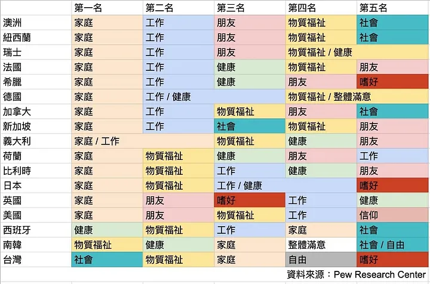
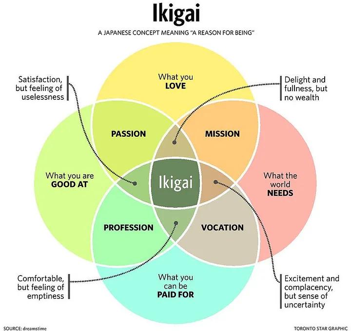

在開始之前，先給自己一首歌的時間，好好享受音樂，一定要聽喔 🤗
摸黑往前走的過程中總會害怕、挫折
忘記讀了哪篇文章看過的，在成長的過程中，比較重要的命題會有三個
- 認清自我跟世界的關係
- 尋找值得全神貫注的領域
- 在愛與被愛中漸漸成熟
認清自我跟世界的關係
前陣子看到在統計調查了 17 國後發現，台灣人的人生意義其實並不從工作裡找。當下覺得有趣馬上就轉發了，此時學弟感慨的表達了下面這一句話。
鬼島跟地獄朝鮮的工作，基本上都在減少身而為人的意義
當下，靠北的我笑了，但笑著笑著卻又悲傷了起來，各位大大是不是也在某些時刻覺得生活怎麼會這麼喘不過氣，太荒謬了！簡直！！！
那，南韓和台灣在意的是什麼，共同在意的是物質福祉、家庭，其中台灣更在意的是社會而南韓在意健康。
- 物質福祉，薪水此時就是某種可衡量的價值，能夠交換物質和福祉
- 家庭意義，在經過原生家庭的影響後，想成為什麼樣子的人

資料來源：Pew Research Center／吳美欣 製圖
工作，佔了人生中很大一部分，唯有工作值得喜愛，人生也才會更加可愛，怎麼活過一天就怎麼活過一生。
- 為什麼要工作?
- 工作是為了什麼?
- 工作的意義是什麼?
- 什麼是好工作?
- 錢跟工作有什麼關係?
- 經歷、成長、成就感跟工作有什麼關係?
常常會想說，等我賺了多少錢之後就可以如何如何。那工作七年賺到了小時候想像不到的數字後，究竟如何如何了嗎?
答案是沒有，同時也開始反思，想做的事情為什麼不能直接去做?
聽一場喜歡的演唱會，絕對是人生中美好的事情之一
若成長必定是孤獨，在初期總會想方設法的追求個人的成功。
社會現實，直到擁有成功後，也才漸漸會有附加的人際關係和成就。
現實以資源來說粗淺來分是三個項目
- 人力，可以使用的肉體以及可支配的時間
- 物力，也就是大家在意的物質福祉
- 財力，資本主義底下維持人力與物力平衡的一種操作工具
在成長階段中大致是三個階段
- 依賴，需要靠著他人、社會的支持
- 獨立，能夠在人力、物力、財力上單獨生存
- 互賴，擁有承諾的能力，承諾在家庭、友誼或是生而為人的意義
而承諾上，只有信守對自己的承諾後才能信守對他人的諾言，是建立在對過去的充分理解後，最終展現對未來責任評估的一個成果。
- 知識，能夠告訴我們做什麼為何做，也就是初期的追求
- 技巧，如何做會更有效率，更容易增加成功率
- 意願，打從內心想做
關於未來或是人生意義的期待，我想大多數的人都可以輕易說出不要什麼，像是我不會想要去賣屁股，但要的是什麼?
- 想要的是不是具體明確?
- 能完成什麼渴望，是想要還是必須?
未來會是什麼樣的景象，能夠想像?
- 實現的機率?
- 是否力所能及?
- 需要什麼代價?
- 可能的阻礙有哪些?
生活應該是那些關於選擇過後，就跟正妹桌面一樣，精選後的才是人生
- 該補什麼樣的經驗，才有機會去體驗
- 該有什麼能力，才有辦法過那樣的生活
- 該接觸什麼人，才能開拓視野和更寬闊的想法
尋找值得全神貫注的領域
Ikigai 這個觀念是某間公司共同創辦人推廣的想法，但說也諷刺，底下的員工為了行銷加班到一個荒謬，後來想想，也許有那麼一點點可能是他數錢數到 Ikigai 了吧 (歪樓 😅

圖片來源: https://www.flickr.com/photos/brf/30840158067
不過，這個概念還是值得推廣的，人生追求的大概就是所愛、擅長、被需要、能賺錢的交集。
- 成就，是全心投入展現重複的累積
- 成就感，是達成某個目標進而滿足內在或外在的期許
之所以常常不滿意、害怕失敗卻又持續過著不太喜歡的生活，根本還是我們不願意付出時間和努力去交換那個可能可以更好的結果。
在愛與被愛中漸漸成熟
在成長的過程中，常常會強迫自己去追尋被滿足或被認同的外在事物，藉由這些事物來填補內心的空洞，像是金錢、成就、全力、愛情。
練習用效率的方式訓練自己，學會趨避風險打安全牌，練習各種成功名人的成功路線方案，認為照著做就可以成功，擁有了之後，卻也發現內心空洞依舊。
這樣的成長方式，我想最終也會發現無法繼續欺騙自己，以網球王子中的天衣無縫來說，是不是喜歡打網球在本質上才是重要的，就像龍馬的爸爸南次郎也告訴大家其實根本沒有天衣無縫這個絕招也可以說全部人其實都會這招。
或許終其一生追求的那些可能渴望是自己本來就擁有的
也許在新的一年，練習讓生活中碰到的事物都有價值，嘗試感受本質上的美好而非社會價值中的征服、擁有越多越好。
練習感受和享受快樂或不快樂，選擇和感受終究是自己給的，選擇或許也不存在正確與否，而在於是不是用心選擇。
喜歡這篇文章，請幫忙拍拍手喔 🤣
站內搜尋
其他相關文章


三種常見核薪流程開箱
2022-02-1722K 很少，那如果是三份 22k+ 的工作呢
2020-11-17
最新的文章
Cumulative Layout Shift (CLS)
2024-03-03Google AdSense 新加坡稅務資訊
2024-03-03當時相信的專案規劃，能夠一如期待?
2024-03-03